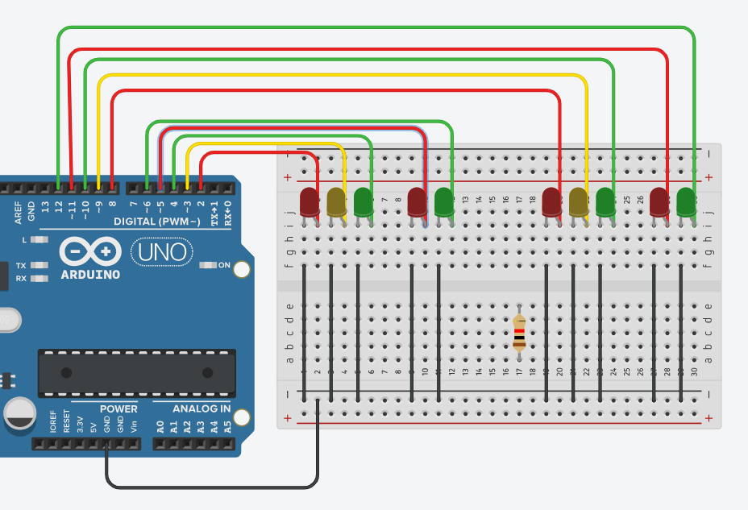

Teve como objetivo criar um código em c++ de um semáforo solo.
Para acessar o código
clique aqui!

Teve com objetivo de melhorar a criação do primeiro semáforo o tranformando em um semáforo misto.
Para acessar o código
clique aqui!
Teve como objetivo criar um códego em c++ para gerar um número e o mostar no anodo.
Para acessar o código
clique aqui!